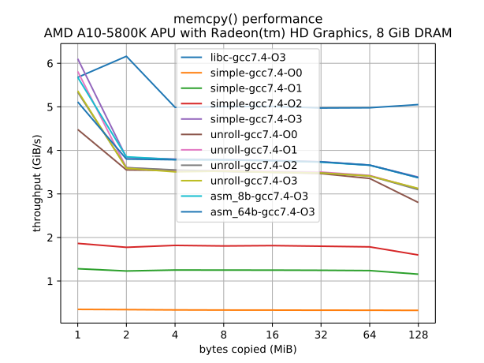
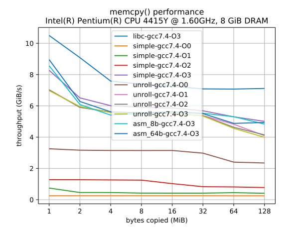
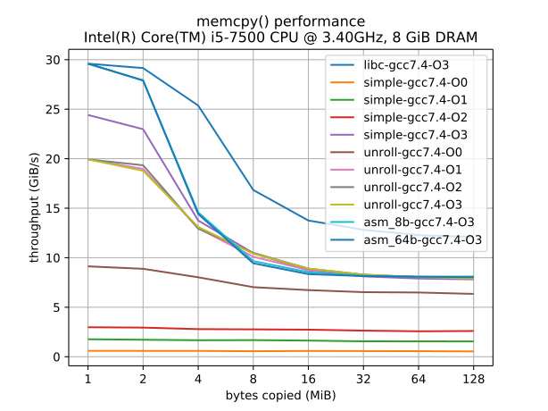
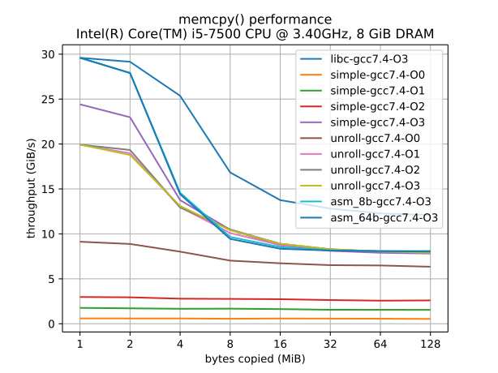

Lab3：性能分析
小实验说明
小实验 (Labs) 是 ICS 这门课程里的一些综合编程题，旨在结合课堂知识解决一些实际中的问题。因为问题来自实际，所以有时候未必能立即在课本上找到相关知识的答案，而是需要“活学活用”。因此，大家需要利用互联网上的知识解决这些问题，但不要试图直接搜索这些问题的答案，即便有也不要点进去 (也请自觉不要公开发布答案)。
实验说明
请先阅读《计算机系统基础》Labs 须知。
获取代码：在 ics-workbench 中执行
git pull origin lab3
提交方法：在 perf 目录下设置好 STUID, STUNAME 环境变量后，执行 make submit 提交。
收到的提交
| 161240007 (21:04 Jan 20) | 161240039 (22:27 Jan 12) | 161240045 (18:57 Dec 23) | 171180589 (11:29 Dec 23) | 171180593 (20:32 Jan 01) | 171860609 (21:22 Jan 11) | 181180200 (08:23 Jan 12) |
| 181220001 (20:09 Jan 12) | 181220002 (22:24 Jan 04) | 181220003 (10:43 Dec 28) | 181220004 (14:46 Dec 21) | 181220005 (01:44 Jan 12) | 181220010 (19:18 Dec 26) | 181220012 (21:25 Jan 11) |
| 181220013 (02:56 Jan 12) | 181220014 (10:33 Jan 12) | 181220016 (18:30 Dec 27) | 181220018 (12:19 Jan 11) | 181220019 (22:24 Jan 12) | 181220022 (15:34 Dec 22) | 181220026 (00:55 Jan 09) |
| 181220028 (04:43 Jan 04) | 181220029 (06:31 Jan 12) | 181220030 (17:38 Dec 22) | 181220031 (19:28 Dec 26) | 181220032 (08:56 Jan 12) | 181220034 (21:03 Jan 12) | 181220035 (20:55 Jan 08) |
| 181220036 (19:03 Jan 01) | 181220038 (20:54 Jan 01) | 181220039 (11:55 Jan 01) | 181220040 (20:07 Jan 12) | 181220041 (11:39 Jan 04) | 181220043 (10:39 Jan 06) | 181220045 (19:27 Jan 02) |
| 181220046 (01:34 Jan 12) | 181220047 (02:27 Jan 12) | 181220048 (19:26 Dec 14) | 181220049 (13:21 Dec 31) | 181220051 (22:42 Jan 12) | 181220052 (17:14 Dec 22) | 181220055 (16:59 Jan 12) |
| 181220056 (15:56 Dec 31) | 181220057 (19:45 Jan 12) | 181220060 (15:27 Dec 22) | 181220061 (20:31 Dec 19) | 181220062 (21:38 Jan 12) | 181220063 (23:26 Nov 30) | 181220064 (08:38 Dec 22) |
| 181220067 (13:33 Dec 21) | 181220071 (20:29 Jan 10) | 181220072 (17:01 Dec 26) | 181220074 (11:38 Jan 12) | 181220075 (03:46 Dec 24) | 181220076 (21:43 Dec 26) | 181220077 (20:28 Jan 12) |
| 181220078 (01:21 Dec 27) | 181220079 (22:36 Jan 12) | 181220080 (23:48 Dec 25) | 181220081 (18:35 Jan 21) | 181240004 (18:39 Jan 01) | 181240008 (23:13 Jan 12) | 181240010 (17:04 Jan 08) |
| 181240014 (23:46 Jan 12) | 181240016 (23:05 Jan 17) | 181240019 (12:15 Jan 04) | 181240020 (19:50 Dec 05) | 181240030 (16:12 Dec 29) | 181240035 (02:01 Dec 24) | 181240045 (23:20 Jan 11) |
| 181240047 (22:06 Jan 12) | 181240050 (19:12 Dec 31) | 181240055 (11:53 Jan 17) | 181240063 (13:13 Jan 12) | 181240064 (23:37 Dec 23) | 181240068 (16:15 Jan 02) | 181240078 (19:02 Dec 17) |
| 181240082 (23:13 Jan 12) | 181250012 (22:59 Dec 08) | 181250097 (23:55 Jan 12) | 181250177 (20:47 Dec 10) | 181250195 (22:10 Dec 30) | 181830196 (21:48 Jan 12) | 181840013 (23:54 Jan 12) |
| 181840064 (14:11 Dec 29) | 181840135 (19:03 Jan 12) | 181840204 (16:11 Dec 19) | 181840264 (10:29 Jan 11) | 181840273 (14:50 Jan 12) | 181840326 (01:10 Dec 22) | 181850236 (21:50 Jan 12) |
| 181860020 (09:55 Jan 11) | 181860035 (10:00 Dec 21) | 181860066 (16:31 Jan 15) | 181860104 (17:46 Dec 22) | 181860124 (14:04 Jan 04) | 181860134 (00:08 Dec 10) | 181860137 (17:33 Jan 03) |
| 181860152 (01:33 Jan 11) | 181860158 (19:54 Jan 03) | 181870015 (20:42 Dec 25) |
实验描述
背景
在上一个实验中，我们使用内嵌汇编实现了 memcpy。实际中的 memcpy 到底应该怎么实现才能最大程度地发挥现代处理器的性能呢？在这个实验中，你需要实现性能的监控程序。
你需要实现命令行工具 perf，它能够反复运行一小段代码，并且度量它的精确运行时间。在框架代码中，已经有一些函数的实现：
void dummy() { } void print_hello() { printf("hello\n"); } void print_error() { printf("invalid subject!\n"); exit(1); } void simple_loop() { for (volatile int i = 0; i < 1000000; i++) ; }
你可以添加自己需要度量运行时间的函数实现，并且把函数名称添加到 perf.h 中。
实验要求：命令行工具
- 解析命令行参数，使得运行
perf fn能运行统计fn函数的运行时间，例如perf dummy统计dummy函数的运行时间。 - 可以用
-r命令行选项指定运行次数，例如perf -r 10000 simple_loop会将simple_loop运行 10,000 次。默认只运行一次。 - 把收集到的运行时间信息以用户友好的形式表示出来——这可以是一个生成的图片 (png, svg 等)，也可以直接输出到终端上。
我们已经提供了框架代码，主要由三个函数组成：
static void run(void (*func)(), int rounds); // 运行 @func 函数 rounds 次 static uint64_t gettime(); // 获取程序运行的时间戳 static void (*lookup(const char *fn))(); // 根据函数名查找对应的入口地址
run 函数相对容易理解，它把 rounds 次运行 func 的运行时间存储到 elapsed 数组中。你需要填入 TODO 的部分生成统计数据，例如数据的分布情况、是否近似为正态分布等。
static void run(void (*func)(), int rounds) { uint64_t *elapsed = malloc(sizeof(uint64_t) * rounds); if (!elapsed) { // 注意错误处理 perror("elapsed"); return; } for (int round = 0; round < rounds; round++) { uint64_t st = gettime(); func(); uint64_t ed = gettime(); elapsed[round] = ed - st; } // TODO: display runtime statistics free(elapsed); // OJ 做多了的坏习惯：申请的内存从不释放 }
实验要求：获取精确时间
gettime 函数获取当前的运行时间。这是你需要实现的一个挑战——在框架代码里，我们获得了基于秒为单位的时间，因此是非常不精确的。建议你查阅资料，获取更精确的时间 (单位不限于秒/毫秒，还可以是处理器周期等)。
通过阅读代码，你应该意识到时间统计可能存在一定的误差：例如在 func 执行时，如果正在运行的进程被中断，甚至导致其他进程被调度，那么当前运行的时间就有可能有较大的偏差。尽可能减少这些误差对最终统计信息的影响。
lookup 用于查找函数名对应的入口地址。函数列表定义在 trap.h 中。如果你阅读这个函数感到困难，有两点建议：
- 查阅互联网上的资料，理解 C 语言的类型系统。这可以帮助你理解
lookup函数到底接受什么参数、返回什么； - 使用
gcc -E查看预处理后的文件。
static void (*lookup(const char *fn))() { #define PAIR(fn) { #fn, fn }, struct pair { const char *name; void *ptr; // bad practice! 思考题：为什么？ }; struct pair lut[] = { PROGRAMS(PAIR) }; for (int i = 0; i < LENGTH(lut); i++) { struct pair *p = &lut[i]; if (strcmp(fn, p->name) == 0) return p->ptr; } return print_error; }
在此基础上，我们希望你评估你 Lab1 中三个 multimod 实现的性能差异。
实验要求：调查 multimod 实现的性能差异
首先，你需要把 multimod 的三个实现包含到这个项目中。复制粘贴 .c 文件是一个办法；你也可以使用 #include 包含这些文件。此外，你需要对这些函数进行包装，使得它们的类型符合 void (*)()。multimod (计算 a * b % m) 的性能可能跟以下因素有关：
a,b,m的大小a,b中二进制 1 的数量- 其他未知因素
因此，你需要调查在不同设置下 multimod 的性能，并撰写 pdf 格式的实验报告，保存在 perf/ 目录下一并提交。
例子：memcpy 的性能
在上一个实验中，我们实现了汇编版本的 memcpy。但到底汇编实现有没有帮助我们提升性能？我们也对 memcpy 进行了一定的性能评估。在评估程序的性能前，首先应当明确实验的范围和设置：
- 我们暂时先关注在顺序复制较大内存时的性能，看怎样的实现能最好地利用好内存和 cache 的带宽，因此我们选取复制 1 MiB 以上的数据的性能；
- 我们对比三个实现，其中
memcpy_simple是 naive 实现；memcpy_asm是使用movs指令的实现；memcpy_unroll是一个非常诡异的实现 (手工循环展开)； - 内嵌汇编对编译优化并不敏感；而
memcpy_simple和memcpy_unroll则对优化非常敏感，因此我们对比-O0到-O3优化级别下的性能； - 不同的处理器微架构、缓存、内存等都对性能有很大影响，因此我们在多个平台上进行实验；
- 实验运行至少 100 次取观测到的最小值。
参考实现的代码如下：
// 教科书上的实现 void *memcpy_simple(void *dst, const void *src, size_t size) { void *ret = dst; while (size--) { (*(char *)dst++) = (*(char *)src++); } return ret; } // Lab2内容，使用movs指令实现 void *memcpy_asm(void *dst, const void *src, size_t size) { // hidden } // 奇怪的循环展开，会编译出非常长的指令序列 void *memcpy_unroll(void *dst, const void *src, size_t size) { void *ret = dst; assert(size % 64 == 0); // 假设已对齐到 64 bytes，简化代码 for (; size; size -= 64) { const uint64_t *s = src; uint64_t *d = dst; d[0] = s[0]; d[1] = s[1]; d[2] = s[2]; d[3] = s[3]; d[4] = s[4]; d[5] = s[5]; d[6] = s[6]; d[7] = s[7]; dst = (char *)dst + 64; src = (char *)src + 64; } return ret; }
下图展示了各个 memcpy 实现的复制吞吐量 (纵轴，单位 GiB/s)；横轴是复制的字节数 (单位 MiB)：

 

在不同配置的计算机 (主流 Intel/AMD) 上，性能测试的结果已经显示出很大的不同。如果考虑移动/嵌入式系统，则可能有更大差距。
无论如何，有一点是非常明了的：glibc 中自带的 memcpy 速度非常之快，在复制大量内存时遥遥领先于其他实现，并且比 movs 汇编指令更快——它使用了 AVX 指令集进行加速。其他一些 (可能有些惊人) 的发现包括：
- gcc 对简单循环在
-O3优化级别下进行了展开，并使用 AVX 指令集加速，从而得到了仅次于 glibc 的性能； - AMD EPYC 处理器对
movs指令硬件实现上的优化远不及 Intel i5； - 手工循环展开虽然显著增加了指令 (尤其在
-O0不优化时)，但提高指令级的并行度使它的性能显著好于优化的简单循环……
思考题：实验数据说明了什么？
实验数据还有哪些有趣的结论？注意你需要谨慎地从数据中得出结论。例如，上述代码被运行过很多遍取平均，因此仅代表缓存仍然处于较为活跃状态时的实验结果。如果你是性能调优的狂热者，请移步Intel® 64 and IA-32 Architectures Optimization Reference。